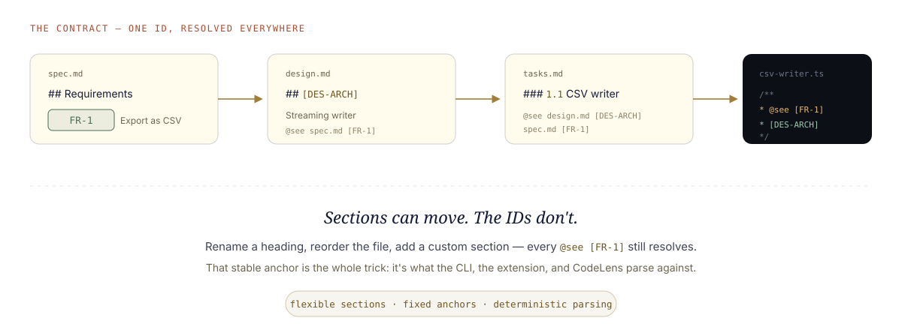

Document anatomy
Every section, every anchor, explained.
A spec, design, and tasks file are plain markdown — but markdown with stable node IDs, so sections can flex while your code, tools, and reviews keep resolving against them. This page maps the required sections and the anchors that hold them together — [FR-1], [DES-ARCH], ### 2.1, @see — with real examples for each.
Read this first · the 30-second version
Plain markdown, durable anchors.
AFX keeps the writing human and the references machine-stable. You can change the prose; the IDs keep the workflow, review, and code links attached.
- Spec says what must be true:
[FR-1] - Design says how it works:
[DES-ARCH] - Tasks turns both into checkable work:
### 2.1 - Code points back with
@see; the journal keeps why
See one whole, first
The same spec.md, two ways. Left is the plain markdown that lives in your repo. Right is what the previewer, the extension, and your reviewers see — parsed straight from the anchors, no database, no export step. Everything below this is how that mapping works.
spec.md — what you (and the agent) write
Rendered — chips, tables, live checkboxes
Room Export — Product Specification
Problem Statement
Treasurers need a room's ledger outside the app — for taxes, disputes, receipts.
Requirements
| ID | Requirement | Priority |
|---|---|---|
FR-1 | Export ledger as CSV | Must |
FR-2 | Stream rows, no buffer | Must |
NFR-1 | 10k rows under 2s | Should |
Acceptance Criteria
- Opens cleanly in Excel & Sheets
- Streaming verified at 10k rows
Same bytes on disk. The frontmatter becomes status chips, ## headings become sections, the pipe table stays a table, and - [x] becomes a checkbox you can actually toggle. The rest of this page is the notation that keeps that mapping deterministic.
01Flexible sections, fixed anchors
AI output is fuzzy; a parser can't be. AFX threads the needle by making the headings free and the IDs fixed. You can rename, reorder, or add a section — as long as its node ID is present and unique, every reference to it still resolves.

The same [FR-1] resolves from spec → design → tasks → code. That's the contract. illustration
Written in the present tense
A spec isn't a plan for what the code will do. It's a living document — a 1:1 reflection of what the code does, now. So it's written in the present tense.
spec.md and design.md represent current product and technical truthjournal.md, not the specWhen the code changes, you refine the doc so the two never drift. That's why the AFX status lifecycle is Draft → Approved → Superseded — a doc is either current truth or explicitly retired. ("Living" is the principle, not a status value.)
02spec.mdthe WHAT
Requirements only — no implementation. Eight ## sections, in order. Custom sections are allowed; the required eight must not be dropped. Code links back to the IDs defined here, forever.
The header the tools read first
YAML frontmatter is the single source of truth for state — never repeated as bold lines in the body. afx: true marks it AFX-owned; type tells the parser which template this is.
- status drives the workflow:
Draft → Approved → Superseded. Approving freezes the spec and unlocks design. - version bumps when scope changes — which reverts status to Draft.
Context, then the problem, then who
References link upstream — proposals, research, ADRs — so the spec isn't a floating artifact. Problem Statement is the "why now." User Stories keeps two fixed sub-headings, ### Primary Users and ### Stories, so the parser can find them.
Requirements — where the IDs are born
Every requirement gets a stable ID. This is the anchor that code, design, and tasks all point back to.
- Format:
FR-N(functional) andNFR-N(non-functional). - Sequential, no gaps —
FR-1, FR-2, FR-3, never skipping. The validator enforces this. - Priority is a fixed vocabulary:
Must Have · Should Have · Nice to Have. - Delete a requirement? Retire the ID, don't renumber — old
@seelinks must not silently repoint.
What "done" means, and what it isn't
- Acceptance Criteria — checkboxes grouped per capability. These become the verifier's checklist.
- Non-Goals — the scope fence, written down so nobody "helpfully" builds it.
- Open Questions — a tracked table with a
Statuscolumn; the previewer nudges you to resolve them. - Dependencies — what must exist first.
Appendix — and your own sections
The Appendix is optional. So is any custom ## you add — a "Metrics" section, a "Rollout" note, whatever the feature needs. The one rule: the required eight stay present and in order. Everything else is yours.
Requirement ID notation
Functional: FR-1, FR-2 … · Non-functional: NFR-1, NFR-2 …
03design.mdthe HOW
Architecture, with a [DES-ID] on every section. This is the most "notation-heavy" file — because it's the one the extension parses hardest to render. Get the anchors right and the tools light up; get them wrong and sections vanish silently.
The node-ID rules — memorise these five
## heading starts with a bracketed ID: ## [DES-API] API Contracts[DES-API], [DES-ROLLOUT]## and ### are captured by parsers; #### and deeper are not## allowed — same anchored form, a fresh unique ID## API Contracts (no ID) · ## API Contracts [DES-API] (ID at end) · ## [des-api] (lowercase)An ID leads every section
The heading text is free — call it "Architecture" or "How it hangs together" — but the ID at the front is the handle. ### System Context and other sub-sections don't need an ID; they're captured as children of their parent ##.
The spec: spec.md backlink is mandatory — it's how the design knows which requirements it serves.
The 12 required sections (+ 2 optional)
Every design.md carries these anchors. Add your own between them freely.
| Node ID | Section | What lives here |
|---|---|---|
[DES-OVR] | Overview | 2–3 sentence summary of the approach |
[DES-ARCH] | Architecture | System context, component diagram |
[DES-UI] | User Interface & UX | This feature's component composition |
[DES-DEC] | Key Decisions | Decision · options · choice · rationale table |
[DES-DATA] | Data Model | Schema, TypeScript interfaces, enums |
[DES-API] | API Contracts | Server actions, input/output types |
[DES-FILES] | File Structure | New files to create, files to modify |
[DES-DEPS] | Dependencies | External & internal packages |
[DES-SEC] | Security Considerations | Auth, boundaries, data handling |
[DES-ERR] | Error Handling | Failure modes and responses |
[DES-TEST] | Testing Strategy | Unit & integration approach |
[DES-ROLLOUT] | Migration / Rollout | Phased plan and rollback |
| [DES-REFS] | File Reference Map | optional |
| [DES-QUESTIONS] | Open Technical Questions | optional |
The sections that carry weight
[DES-DEC] is where the "why" is pinned — a table of what you chose and what you rejected. It's the antidote to "we lost the argument": the reasoning is on the record, anchored.
[DES-API], [DES-DATA], and [DES-FILES] hold the concrete contracts — signatures, schemas, exact file paths — so the implementation has a target, not a vibe.
04tasks.mdthe WHEN
The execution plan. Hierarchical task IDs, each group scoped to files and linked back to the spec and design it implements. This is where the anchors get used.
Every group is a provable slice
- Task ID
### N.N— phase-dot-task.1.1,1.2, then2.1… - File scope —
<!-- files: … -->names exactly what this task may touch. The drift guardrail holds the agent to it. - The
@seeline — links the task to its design section and requirement. This is the anchor made actionable. - Checkboxes — completion criteria the verifier checks against.
Task numbering & reference notation
Numbering: 0.x pre-cleanup · 1.x, 2.x, n.x phases. Task groups are ### N.N.
References use node IDs: [FR-1] spec · [NFR-2] spec · [DES-API] design · [1.1] another task.
Work Sessions — the two-signature ledger
Nothing ships on the model's word
A fixed six-column schema — Date · Task · Action · Files Modified · Agent · Human — appended to, never rewritten. Every row carries two checkboxes.
- Agent
[x]lands whenverifypasses its evidence checks. - Human
[x]is yours to give. A task is done only when both are ticked.
The same schema appears in Dash and Sprint files — which is why graduating up the ladder is lossless.
05The @see contract
All that notation exists for one payoff: code that points back at the requirement that justified it — and stays pointed even as the docs evolve.
The editor reads every ID on the line
The extension parses the @see path and each bracketed ID separately — and a single line can carry several, like spec.md [FR-2] [FR-3]. Each one becomes live:
- Hover a
[FR-3]→ a preview of that exact section pops up inline — you read the requirement without leaving the file. - Click it → the cursor jumps straight to that table row or heading in the spec. Not just the file — the exact line.
- Rename-proof: it resolves the ID against the row or heading, so renaming the section title changes nothing. The hover and the jump still land as long as the ID is intact.
- A broken link (retired ID, moved file) surfaces as a diagnostic, not silent rot — and
/afx-check traceaudits every@seein CI, headless.
[FR-1] in the spec → a decision [DES-ARCH] in the design → a task 1.1 that implements it → a function that @sees both. Change a heading, and it all still resolves — because you anchored to the ID, not the words.06The three shapes — dash · sprint · full
The same notation scales down. A one-line bug fix doesn't need four files, and a quarter-long feature shouldn't live in one. AFX gives the exact same anchors — FR-N, [DES-*], ### N.N, @see, the two-signature Work Sessions ledger — in three sizes. Pick the smallest that fits; graduate up when scope grows, and nothing is lost.
| Dash | Sprint | Full | |
|---|---|---|---|
Frontmatter type |
DASH |
SPRINT |
SPEC · DESIGN · TASKS |
| Files on disk | one — <feature>.md |
one — <feature>.md + journal.md |
four — spec.md · design.md · tasks.md · journal.md |
| Sections | Purpose · Tasks · Work Sessions | References · Spec · Design · Tasks · Work Sessions (one doc) | The full 8 / 12+2 / task set, split across files |
| Approval gating | none — just do the work | frontmatter approval: block — spec → design → tasks, in order |
per-file status: — Draft → Approved → Superseded |
| Best for | surgical fix, known-scope bug, focused refactor, small config/test work | a real feature that's still small — needs spec + design + tasks, fast | larger, multi-phase, strategic work worth splitting |
| Same anchors? | Yes — identical FR-N / [DES-*] / ### N.N / @see notation and the same six-column Work Sessions ledger in all three. |
||
| Graduates to | Sprint or Full | Full (/afx-sprint graduate) |
— (the ceiling) |
All three live under docs/specs/<feature>/. Graduation is a lossless promote: IDs and Work Sessions carry over verbatim, only @see paths retarget.
Where the files land
Everything sits in one feature folder. The shape decides how many files — never where they go.
One folder, one feature
The folder name is the feature slug. A Dash and a Sprint both use <feature>.md as the single doc — the type: in frontmatter is what tells them apart. Graduating a Sprint to Full keeps the folder and adds the split files beside it.
- journal.md appears from Sprint up — it's the append-only session log that keeps continuity across agent runs.
- ADRs and research live one level deeper, under
research/— covered in the sources below.
A worked Dash
The lightest shape: a purpose, a task group, and the ledger. No status, no gates — for when the scope is already clear.
Structure without ceremony
Purpose replaces the whole spec — the "why", with optional Observed / Expected / Scope labels that suit a bug. Tasks uses the exact same ### N.N groups and <!-- files: --> scope as a full tasks file.
- No
status, noapprovalblock — a Dash is trusted to just move. - Work Sessions is still the same six-column ledger, appended by
/afx-dash codeandverify. - Outgrows itself?
type: DASH → SPRINTin place, or graduate to the four-file set — task IDs and ledger untouched.
A worked Sprint
Spec, design, and tasks in one document — separated by HTML-comment markers the tools parse against, gated by an approval: block in the frontmatter.
The whole loop in a single file
- Section markers —
<!-- SPRINT-SECTION-START: SPEC -->…ENDwrap each stage. They're what the graduate command extracts against, and what the extension reads to fill the stepper. - Headings promote one level —
### Requirementshere becomes## Requirementswhen it graduates tospec.md. The IDs don't move. - The
approval:block gates in order: design can't be approved untilspec: Approved, tasks untildesign: Approved. - The
@seeline points atroom-export.mdwhile it's a sprint;graduateretargets it todesign.md/spec.md.
Sections 1–4 mirror the parent templates exactly — which is what makes /afx-sprint graduate a clean extract-and-promote rather than a rewrite.
A worked Full spec
Nothing new to learn — the full shape is simply the three files you've already met on this page, split out and gated independently. Sections 02, 03, and 04 above are the worked full example, dissected row by row.
What "graduating to full" actually does
1. Splits the one doc into spec.md · design.md · tasks.md, promoting each section's heading level back up.
2. Keeps every FR-N, [DES-*], ### N.N ID and the entire Work Sessions ledger verbatim.
3. Retargets @see paths from <feature>.md to the new spec.md / design.md, preserving the node IDs.
4. Archives the original as <feature>.md.archived — never deletes it, never leaves two competing sources of truth.
@see IDs — only the paths beside them.07How the stepper reads it
The notation isn't just for humans and CI — the VS Code extension parses these same files live. Open an SDD doc and a four-pill stepper appears in the chat composer: Spec · Design · Tasks · Work. It's not decoration; every pill's colour is read straight from the frontmatter, and clicking one navigates the workflow.
 1
2
3
4
5
6
1
2
3
4
5
6
The active doc
SPEC.MD · DRAFT, with a Preview toggle. The stepper always reflects whichever SDD file is open in the editor.
Spec — active
The open file: it carries the brass ring. Its fill tone is read from this file's status — soft for Draft, solid once approved.
Design — reached
Filled, and the connector into it is solid, because the host read the sibling design.md's frontmatter — it's on the ladder, not pending.
Tasks & Work — pending
Dotted and muted: no status read yet. Once tasks exist, this pill shows a live done/total count and the line to it fills in.
The intent label
Names the current stage's job — "Spec — clarify requirements, acceptance, and scope." It changes with the active pill.
The stage commands
The /afx-* commands for this stage as buttons. ✎ Draft ones edit in the composer first; ⚡ Auto ones run immediately.
Real capture — the chat composer with a spec open. annotated screenshot
Where each pill's colour comes from
The host reads the frontmatter and turns it into a pill status. There's no hidden state — the file is the state.
| Frontmatter says | Pill becomes | Looks like |
|---|---|---|
status: Approved | approved | solid brass, filled connector |
status: Draft | draft | soft brass |
| gated on an unapproved upstream | blocked | amber |
| tasks with open checkboxes | progress | brass with a 3/8 count · gradient line |
| no file / no status read | pending | dotted, muted |
Two files, one stepper
In the standard 4-file layout each pill reads its own file's status. In sprint mode the four pills read the single approval: block instead — same four stages, one document.
- Clicking a pill navigates: in 4-file mode it opens the sibling
spec.md/design.md/tasks.md; in sprint mode it jumps to thatSPRINT-SECTIONheading in the one file. - The connector line fills solid up to the last reached stage, and shows a gradient across Tasks as the checkboxes complete.
- This is the same node-ID discipline paying off: the stepper is just a parser reading anchors and frontmatter you can see in plain text.
08How the previewer renders it
Open an AFX doc in the workbench previewer and it's more than pretty markdown. The frontmatter becomes status chips; the checkboxes become live toggles; and — because the parser knows what each section is — the right /afx-* commands hang off the right parts of the document as small toolbars. The notation is what makes that possible.
 1
2
3
4
5
6
7
8
1
2
3
4
5
6
7
8
Frontmatter → status chips
The YAML header is stripped from the body and re-shown as chips: type · status · version · owner · updated. Never duplicated as bold lines.
Inline task commands
Each phase and task group gets a Code Phase 2 / Code 2.1 button, built from its ### N.N ID — draft a coding command for exactly that task.
Live checkboxes
Acceptance and task boxes are real inputs. Ticking one writes straight back to the markdown — not a read-only render.
Node-ID links
[FR-1], [DES-UI] in the Cross-Reference Index resolve as links — the same anchors code @sees.
The sign-off toolbar
Sessions: Approve, Agent all, Human all. The two-signature ledger, made clickable. Approve ticks Human on every Agent-verified row
Work Sessions table
The append-only ledger itself, with its Agent and Human columns — the source of truth the toolbar above acts on.
Quality pulse
A scorecard — Strategy · Structure · Clarity · Completeness — plus a plain-English list of what's still to review. Read from the doc, live.
Refinement coach
Turns a gap into an action: here it spots open tasks and offers a Verify tasks button that runs the command for you.
Real capture — a sprint doc in the workbench previewer. annotated screenshot
What it does under the hood
The body is rendered with a standard markdown engine (react-markdown + GFM), so tables, checklists, and code fences all render correctly. On top of that, three things make it an AFX previewer:
- Frontmatter is lifted out and shown as status chips, never left as raw YAML in the body.
- Checkboxes are wired — task and Work Sessions ticks write back to the file.
- Sections are recognised and given command toolbars. This is where the node IDs earn their keep.
The toolbars, and where they attach
A toolbar is a row of the stage's /afx-* commands. Each button is either ✎ Draft (drops the command into the chat composer to edit) or ⚡ Auto (runs it immediately). They attach at three levels:
| Scope | Attaches to | How it's matched |
|---|---|---|
| Document | the whole file, in the header | the frontmatter type (SPEC / DESIGN / TASKS / SPRINT / …) |
| Section | the top of each major section | the SPRINT-SECTION kind, or the heading's text |
| Inline | after a heading, phase, or task group | the ### N.N task ID or the heading slug |
What each section offers
Because the parser knows a Tasks section from a Spec section, it can offer the commands that actually apply there. In a sprint doc the section toolbars map by kind:
| Sprint section | Draft ✎ | Auto ⚡ |
|---|---|---|
## 1. Spec | Refine spec · Author design | Verify spec · Approve spec |
## 2. Design | Refine design · Author tasks | Verify design · Approve design |
## 3. Tasks | Refine tasks · Code tasks · Graduate | Verify tasks · Approve tasks |
## 4. Work Sessions | the sign-off toolbar (Approve · Agent all · Human all) | |
The whole-document toolbar in the header is keyed to the file type instead:
| Document type | Its header commands |
|---|---|
SPEC | Refine · Author · Validate ⚡ · Review ⚡ · Approve ⚡ |
DESIGN | Refine · Author · Validate ⚡ · Review ⚡ · Approve ⚡ |
TASKS | Code · Verify ⚡ · Pick ⚡ · Review ⚡ · Status ⚡ |
JOURNAL | Note · Log · Recap ⚡ · Promote · Capture |
ADR | Review · Supersede · List ⚡ |
SPRINT | Verify ⚡ · Graduate |
In a standard (non-sprint) doc, sections without a fixed kind are matched by heading text instead — an Open Questions heading offers Answer / Resolve / Journal; a Requirements heading offers Refine / Review.
09Where the notation comes from
None of this was invented from scratch. AFX's template system is a pragmatic hybrid of established standards — requirements engineering, agile practice, architecture documentation, project management. Each borrowed idea is mapped to exactly where it shows up in the templates. Credit where it's due.
| Standard | Origin | Where in AFX | What we took from it |
|---|---|---|---|
| IEEE 830 / ISO 29148 | IEEE, 1998 | spec.md |
The SRS structure — problem, requirements, acceptance — adapted to feature-level specs instead of whole systems. |
| MoSCoW | Dai Clegg, 1994 (DSDM) | spec.md · FR table |
The Must / Should / Nice to Have priority vocabulary in every requirement row. |
| User Stories | Connextra / Mike Cohn (XP) | spec.md · User Stories |
The As a … I want … So that … framing under ### Stories. |
| C4 Model | Simon Brown | design.md · [DES-ARCH] |
System Context and Component views — the two sub-headings under Architecture. |
| ADR | Michael Nygard, 2011 | research/*.md · [DES-DEC] |
The Context → Decision → Consequences shape — for standalone ADRs and the Key Decisions table. |
| WBS | PMI PMBOK Guide | tasks.md |
Hierarchical decimal numbering — 1.1, 2.3 — for decomposing work into task groups. |
| Traceability Matrix | IEEE 830 / DO-178C | tasks.md · Cross-Reference Index |
The Requirements → Design → Code mapping that /afx-check trace audits. |
JSDoc @see |
JSDoc / Javadoc | source code | The @see tag itself — repurposed to point a function at the requirement and design section it implements. |
| Obsidian / Dataview | Obsidian community | every file · frontmatter | YAML frontmatter as queryable properties, and #hash-tags — so an AFX repo doubles as an Obsidian vault. |
The first seven rows mirror the canonical Standards Lineage in the workflow repo at docs/agenticflowx/prd-reference.md; the @see and frontmatter rows we credit here too.
FR-1 / [DES-*] anchors on the sections so headings stay free while every tool parses against a stable ID. That's the glue that turns a pile of good conventions into something a CLI, an extension, and CI can all read the same way. Back to §01 →—Notation cheat sheet
| Notation | Where | Means |
|---|---|---|
type: SPEC|DESIGN|TASKS | frontmatter | Which template a parser should apply |
FR-N · NFR-N | spec.md | Functional / non-functional requirement ID — sequential, unique |
Must / Should / Nice to Have | spec.md | The only valid requirement priorities |
## [DES-*] | design.md | Section anchor — uppercase, bracketed, at the start, unique |
### N.N | tasks.md | Task group ID — phase.task |
<!-- files: … --> | tasks.md | The file scope the task may touch |
@see path [ID] | code & tasks | Backlink to a requirement or design section |
[x] Agent · [x] Human | Work Sessions | Two-stage sign-off — both required to be "done" |
status: Draft→Approved→Superseded | frontmatter | Living-doc lifecycle; approval gates the next stage |